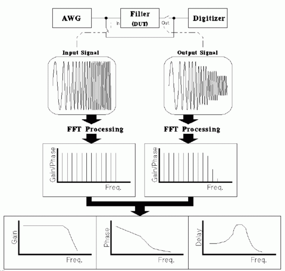
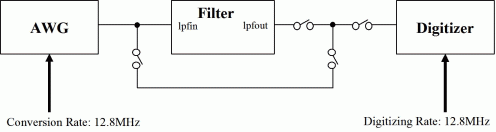
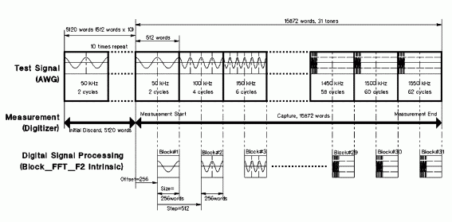
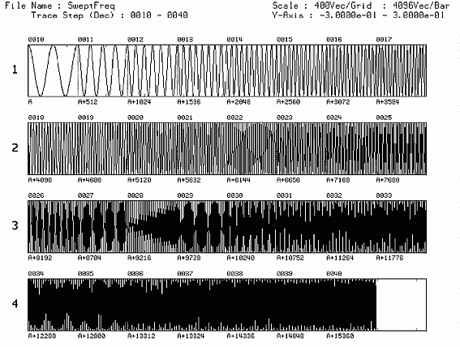
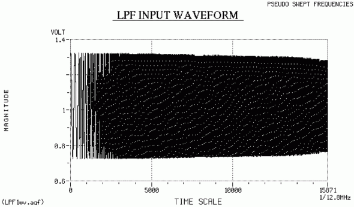
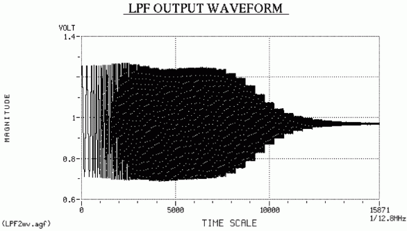
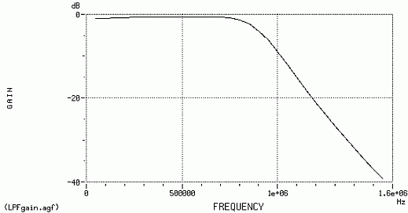
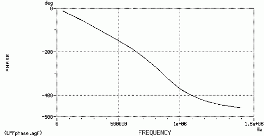
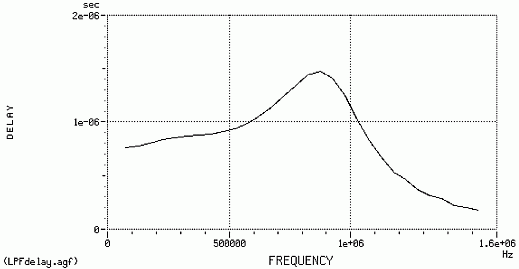
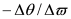

Filter Test using Pseudo Swept Frequencies
Hideo Okawara, Verigy
Paper ID: 106019
Introduction
Frequency response is a key test item for filters. To measure the gain-frequency response, phase-frequency response, and group delay for filters, you can use the pseudo swept frequencies method. This method incrementally changes the input signal frequency to a filter (DUT), and measures the output signal from the filter.
Another method is the multi-tone method, which is introduced in the Application Note entitled "Group Delay Measurement".
Test Method
The following shows the outline of the pseudo swept frequencies method.

The procedure is as follows:
- Apply a sine (or cosine) wave signal to the filter's input pin by using the arbitrary waveform generator (AWG). The signal is swept by desired frequency resolution in the measurement frequency band.
- Digitize the filter input signal by using the digitizer, then store into an array for processing.
- Calculate cosine component (real part) and sine component (imaginary part) of each input test frequency by fast Fourier transform (FFT) processing.
- Calculate gain and phase for input test frequencies from FFT results.
- Digitize the filter output signal by using the digitizer, then store into an array for processing.
- Calculate cosine component (real part) and sine component (imaginary part) of each output test frequency by FFT processing.
- Calculate gain and phase for output test frequencies from FFT results.
- Calculate phase-frequency response from input and output gain data.
- Calculate phase-frequency response and group delay characteristics from input and output phase data.
Example
The test parameters of this example are:
- Gain-frequency response
- Phase-frequency response
- Group delay
The test conditions are:
- Measurement Frequency Band: 50KHz to 1550 KHz (31 test frequencies)
- Measurement Frequency Resolution (Sweep Step): 50 KHz


Figure 4 shows the waveform data stored into the AWG memory for this example.

The following Figure 5 and Figure 6 show the input and output signals to the low pass filter, and frequency responses calculated from captured input and output signals.

In the above figure, the magnitude of the input signal decreases depending on the frequency characteristics of AWG filter and digitizer lines.




In the above figure, group delay data is calculated from

. So, the mid-points between adjacent measured frequencies are plotted.Example Code
void LPF_Test(ARRAY_D & dVdtz1, ARRAY_D & dVdtz2, double dFdtz, int Nblock, int NbinOffset, int NbinStep,
ARRAY_D & dFreq1, ARRAY_D & dGain, ARRAY_D & dPRdeg, ARRAY_D & dFreq2, ARRAY_D & dDelay) {
/****************************************************************************
* ARRAY_D & dVdtz1 : Input Parameter : Measured LPF Input data
* ARRAY_D & dVdtz2 : Input Parameter : Measured LPF Output data
* double dFdtz : Input Parameter : Sample frequency of Digitizer
* int Nblock : Input Parameter : Number of data in one frequency blcok
* Nblock = n power of 2
* int NbinOffset : Input Parameter : Frequency bin number of first frequency
* int NbinStep : Input Parameter : Frequency bin step of each frequency
* ARRAY_D & dFreq1 : Output Parameter : Frequencies at Gain & Phase data
* ARRAY_D & dGain : Output Parameter : Gain characteristics
* ARRAY_D & dPhaRot: Output Parameter : Phase characteristics
* ARRAY_D & dFreq2 : Output Parameter : Frequencies at Group Delay data
* ARRAY_D & dDelay : Output Parameter : GroupDelay
*
* Output parameters are resized in this function.
*
* FFT is performed for each frequency block and the first half of data in
* each block is ignored (Nblock/2) and second half of data in block (Nblock/2)
* is used for FFT calculation.
****************************************************************************/
int i, k, Nsp, Ndtz1, Ndtz, Noffset;
INT Ntones;
ARRAY_COMPLEX CSp;
ARRAY_COMPLEX CDSp;
ARRAY_D dAx;
ARRAY_D dPx;
double dV0dBm0, dFresln, dP, dW, dX;
ARRAY_D dPhase1;
ARRAY_D dPhase2;
ARRAY_D dXin;
ARRAY_D dXout;
ARRAY_D dPhaRot;
Ndtz1 = dVdtz1.size(); // Data sizw of Measured Data
dV0dBm0 = 0.3 V; // AWG output voltage (Vpeak)
Ndtz = Nblock/2; // Size of the data for FFT calculation
/* Noffset is the size of the offest until the start point of the FFT */
Noffset = Nblock / 2;
Ntones = Ndtz1 / Nblock;
dFresln = dFdtz / (double)Ndtz;
/* Resize the ARRAYs */
dAx.resize(Ntones);
dPx.resize(Ntones);
CSp.resize(Ntones*Ndtz/2);
CDSp.resize(Ntones);
dPhase1.resize(Ntones);
dPhase2.resize(Ntones);
dXin.resize(Ntones);
dXout.resize(Ntones);
dPhaRot.resize(Ntones);
dFreq1.resize(Ntones);
dFreq2.resize(Ntones-1);
dGain.resize(Ntones);
dPRdeg.resize(Ntones);
dDelay.resize(Ntones-1);
/* LPF INPUT */
/* Transfer time domain data of LPF input signal to frequency domain data */
DSP_BLOCK_FFT(dVdtz1, CSp, Noffset, Nblock, Ndtz, Ntones, RECT);
/* Pick up fundamental frequemcy elements of Ntones from FFT results */
Nsp = Ndtz/2;
for (i = 0; i < Ntones; i++) {
CDSp[i] = CSp[Nsp*i+NbinOffset+i*NbinStep];
}
/* Claculate gain data and phase data at LPF input signal */
DSP_RECT_POL(CDSp, dAx, dPx);
for (i = 0; i < Ntones; i++) {
dXin[i] = 20.0 * log10(dAx[i]/dV0dBm0);
dPhase1[i] = dPx[i];
dFreq1[i] = dFresln * (i+1);
}
/* LPF OUTPUT */
/* Transfer time domain data of LPF output signal to frequency domain
* data */
DSP_BLOCK_FFT(dVdtz2, CSp, Noffset, Nblock, Ndtz, Ntones, RECT);
/* Pick up fundamental frequemcy elements of Ntones from FFT results */
for (i = 0; i < Ntones; i++) {
CDSp[i] = CSp[Nsp*i+NbinOffset+i*NbinStep];
}
/* Claculate gain data and phase data at LPF output signal */
DSP_RECT_POL(CDSp, dAx, dPx);
for (i = 0; i < Ntones; i++) {
dXout[i] = 20.0 * log10(dAx[i]/dV0dBm0);
dPhase2[i] = dPx[i];
}
/* Calculate gain difference from LPF input/output gain data */
for (i = 0; i < Ntones; i++) dGain[i] = dXout[i] - dXin[i];
/* Calcultate phase differences and group delay from LPF input/output
* phase data */
DSP_SUB_VEC(dPhase2, dPhase1, dPhaRot);
for (i = 0; i < Ntones; i ++) {
dX = dPhaRot[i];
k = 0;
if (dX > M_PI) {
dX = dX - 2.0 * M_PI;
k = 1;
}
if (dX < -M_PI) {
dX = dX + 2.0 + M_PI;
k = 1;
}
if (k) dPhaRot[i] = dX;
if (dPhaRot[i] > 0.0) dPhaRot[i] = dX - 2.0 * M_PI;
}
i = 1;
while ((dPhaRot[i] - dPhaRot[i-1]) < M_PI && i < Ntones) i++; k = i;
for (i = k; i < Ntones; i++) dPhaRot[i] = dPhaRot[i] - 2.0 * M_PI;
dW = 2.0 * M_PI * dFresln;
for (i = 0; i < Ntones-1; i++) {
dP = dPhaRot[i+1] - dPhaRot[i];
dW = 2.0 * M_PI * dFresln;
dDelay[i] = -dP/dW;
}
/* Change the units */
for (i = 0; i < Ntones; i++) {
dPRdeg[i] = dPhaRot[i] / M_PI * 180.0;
}
for (i = 0; i < Ntones-1; i++) {
dFreq2[i] = (dFreq1[i+1] + dFreq1[i]) / 2.0;
}
}To improve the throughput of this example, you can optimize the number of sine wave cycles and the measurement points. For simplicity, each frequency is generated for the same amount of time. So, for higher frequencies, more cycles than necessary are generated. Also, for each frequency, only half the measurement points are used in the FFT calculation. So, to reduce the measurement time, you can reduce the number of sine wave cycles and the amount of unused measurement points.